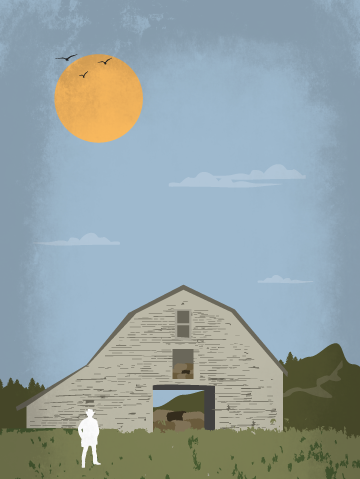

The Horse Van
Jack Lord
Author’s note

This book is not a work of fiction. Everything that you will read in these pages is based on archival research. The people, places and times have been switched around some, but they are real. I did not change much: a few names, the textures of the earth, the tint of the sky, the precise words chosen and the precise moment those words were spoken. Details, only.
But, still, as a historian I have the power to go back and alter past events. That power comes not from lying, exactly, but from finessing. Fill in enough unknown details of the past, or smooth off enough rough edges, and a new interpretation of events starts to emerge: mine.
This book would not exist if its protagonist had that same power. An animal unstartled, the same words uttered in another tone, a look not returned, the hands of the clock at different angle, a barrel aimed a few degrees to the left — any of these might have led to a very different story, one not likely to have been recorded, or been so regretted.
This book is not a work of fiction, then, but it is still based on a lie: that we can reach into the past, and change what we find there.
Jack Lord, PhD, 2016